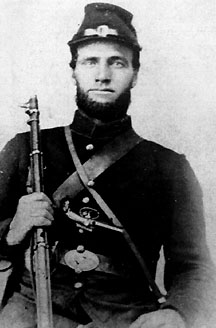

|

NAME: Maxfield Hite
BORN: 1826
DIED: 1890
ALLEGIANCE: Union
HIGHEST RANK: Sergeant
UNITS: 31st Ohio Infantry, 89th Ohio Infantry
RECORD: 1861 - enlisted as a private on August 5.
1862 - promoted to corporal in April; promoted to sergeant
in August. 1864 - mustered out in September.
|
|
Five months after enlisting in the 31st Ohio Infantry's
Company A on August 5, 1861, 34-year-old Private Maxfield
Hite was cast into Civil War soldiers' purgatory, that
perpetual state of privation and armed confrontation that
continually threatened disease and death.
Hite, a father of seven children, was fighting with his
regiment at Mill Springs, Kentucky, on January 19, 1862,
helping to repulse a Confederate charge through an icy soup
of rain and fog. That night the Ohioans laid down on the
muddy, cold ground without tents. After attempting to sleep
a few hours and then eating an inadequate few mouthfuls of
rations, they left to chase the Rebels across rain-swollen
Fishing Creek. Fighting the invigorated current, they hung
onto a rope stretched from bank to bank to keep from being
washed downstream. They marched for hours in sopping clothes
only to try sleeping again on saturated soil. A few days
later the conditions overwhelmed one soldier. The remaining
men collected $51.50 to send his body home so he would not
be buried in Confederate earth.
In March the regiment was sent to upper Tennessee for
about one year. Hite was promoted to corporal that April and
to sergeant that August. While in that region the regiment
fought in several major engagements, including the Battles
of Perryville, Kentucky, and Stone's River, Tennessee.
From July to October 1863 Hite was sent back to Ohio to
recruit replacements for lost ranks. He returned to battle
just in time for the campaign to capture Chattanooga. Except
for a stint with the depleted 89th Ohio, he spent the rest
of his enlistment with the 31st. His last skirmish was
during Major General William Tecumseh Sherman's successful
Atlanta Campaign. Hite was mustered out on September 19,
1864, 17 days after the city fell to the Union.
Hite died of a heart attack in 1890 while hauling grain
to a mill.
Source: Civil War Times Illustrated
32:4 (October 1993), 90.
|